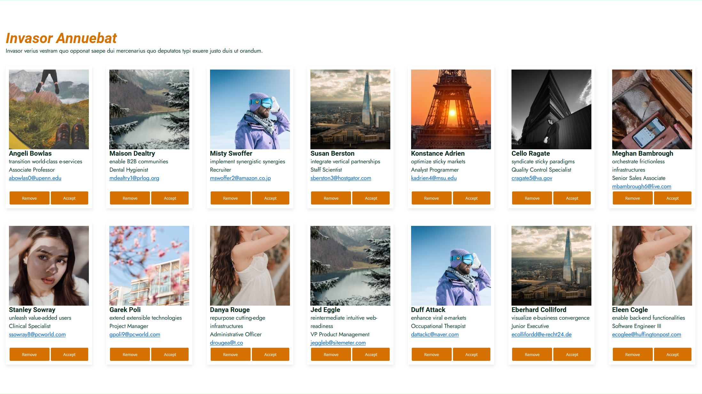

This assignment is about font hierarchies, font-sizing and UI improvement of a basic webpage.
PROJECTS
13C.01.01 Fonts and UI components

13C.01.02 Colors and animations

This assignment is about color palettes, dark mode and simple animations.
CONCLUSION
I’ve learned a lot from this Theme. I already know the basics of font and colors, but I still learned something I didn’t know, especially with the 60-30-10 rule. The animations is also nice to know, so you don’t have to have like 500 lines of CSS with keyframes and all that jazz you know.